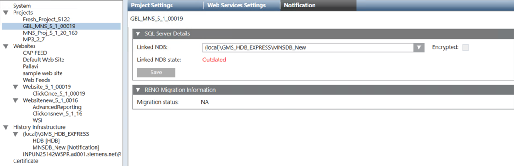

Link an NDB to the Project
- In the SMC tree, select the project.
- Select the Notification tab.
- The Notification tab details display.

- In the SQL Server Details expander, select the NDB from the Linked NDB drop-down list.
NOTE1: The NDB status is displayed in Linked NDB state field. The NDB states are same as the HDB states. For more information, refer to the Server Project Information Expander section in the Project Modification Settings topic.
NOTE2: The Encrypted check box is enabled only when the Notification database that you have linked to the project is on the remote computer (SSL on TCP/IP connection).
NOTE3: Encrypting the communication between Server project and remote SQL Server slows down the performance. For more information on the steps to configure secure communication between Notification server and Database server including certificate creation, refer to prerequisites and Set the Encryption in the SQL Server Configuration Manager section in Setting up Server Project with Remote HDB (SQL Server).
NOTE4: You need to manually disable TCP/IP protocol for the SQL instance in the SQL Server Configuration Manager dialog box for making the SQL server ‘locally bound’. - Click Save.
- The NDB is linked with the project.
NOTE: If a project 'A' is linked to NDB 'A' and you try to link another NDB 'B' to the same project 'A', a prompt displays stating "selected NDB 'B' does not belong to Project 'A', do you still want to connect". When you select yes, the Project A is linked to the NDB 'B' and NDB ‘A’ is no longer linked to project ‘A’.